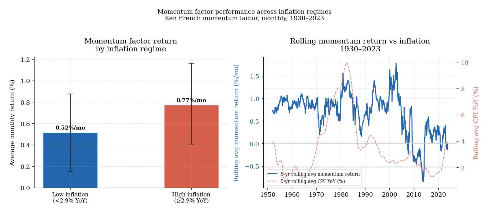

3. Signals, forecasting, and the difficulty of active outperformance
Markets price assets through competition among investors who are each trying to form an edge — an information advantage, a signal, a method that produces returns above what the market already reflects. Understanding why that effort so rarely succeeds in producing persistent excess return is not a counsel of despair. It is the most useful starting point for building a process that is honest about what it can and cannot achieve.
What fundamental work can and cannot do
Fundamental analysis begins from the premise that the asset has economic characteristics that matter for long-run return, and that understanding those characteristics provides a durable basis for investment. In equities this means revenue quality, margins, capital intensity, competitive durability, management incentives, reinvestment opportunity, and balance-sheet structure. In credit it means debt capacity, covenant protection, refinancing exposure, and default risk. In macro and cross-asset work the equivalent involves growth, inflation, external balances, policy sensitivity, and the transmission channels between macro variables and asset prices. The central appeal of the method is that it grounds investment work in the economics of what is actually being owned, rather than in the path of the quotation alone (Damodaran 2006).
At its best, fundamental work forces a series of questions that must be answered before capital is committed: what does this asset actually produce, what does it cost, what could damage it, and does the current price leave room for a return that is worth the risk? That discipline is genuinely valuable. It distinguishes businesses that are durable from those that are fragile. It prevents capital from being allocated too carelessly inside a broad market theme. It makes the fragility of a thesis visible before it becomes expensive.
The limits of the method are more frequently understated by those who practice it. Good asset-level analysis does not guarantee good returns over a relevant horizon. A company can be well understood, genuinely high quality, and still be a mediocre investment if the market already knows what the analyst knows. Correct analysis is not equivalent to differentiated analysis, and differentiated analysis is what outperformance requires. There is also the question of timing: a fundamental framework that concentrates on long-run normalized earnings may be entirely correct and still be irrelevant in a period when the market is pricing short-term refinancing risk, regulatory uncertainty, or macro regime sensitivity.
What price-based work reveals — and the debate about market efficiency
Technical analysis begins from a different premise: rather than asking what an asset should be worth, it asks what the market itself may be communicating through the behavior of prices.
Before evaluating what price-based signals can capture, it is worth being precise about the theoretical backdrop against which they are assessed. The efficient market hypothesis (EMH), as formalized by Fama, holds that prices reflect available information — but the claim has three distinct forms that are often conflated (Fama 1970). The weak form states that prices fully reflect all information contained in past prices, meaning that no trading rule based on historical price data can generate abnormal returns. The semi-strong form extends this to all publicly available information. The strong form extends it further to all information, including private. These are progressively more demanding claims, and the evidence against them varies substantially across the three levels. The semi-strong form is broadly well-supported in liquid markets. The strong form has long been known to be false — insider trading produces abnormal returns. The weak form, which is the most directly relevant for technical analysis, is more contested.
The random walk model is the purest expression of the weak-form EMH applied to prices. If price changes are random — serially uncorrelated, driven entirely by unpredictable new information — then past prices contain no useful information about future prices, and any pattern in historical data is coincidence rather than exploitable structure. This is a strong claim, and it has empirical content. Lo and MacKinlay tested it directly using variance-ratio tests on weekly U.S. stock returns and rejected it — they found positive serial correlation in short-horizon returns inconsistent with a pure random walk (Lo and MacKinlay 1988). That rejection does not prove that markets are broadly forecastable or that technical trading rules are reliably profitable. It does mean that price data has historically contained structure beyond pure white noise, and that the strongest version of the random walk claim is empirically unsustainable.
The adaptive markets hypothesis, proposed by Lo, offers a more nuanced resolution (Lo 2017). Rather than treating market efficiency as a fixed property, it treats it as a moving equilibrium. Markets become more efficient as competition for exploitable patterns intensifies, and less efficient when that competition diminishes or when market structure changes. A trading rule that worked in the 1970s may have been arbitraged away by the 1990s. A new source of inefficiency may have emerged in the 2010s as passive flows changed the price formation process. This framework is useful precisely because it explains both the historical evidence of structure in prices and the well-documented tendency for that structure to decay after discovery.
At its more serious end, price-based work is an attempt to extract information from the collective behavior of market participants — information about crowding, positioning, the pace of information diffusion, flows, and shifts in risk appetite that may not yet be visible in fundamental data. A security that begins to underperform persistently, despite appearing cheap on a normalized earnings basis and despite no obvious deterioration in the public narrative, is telling the analyst something. The price behavior does not prove the market is correct, but it suggests that some combination of expectations, positioning, or information not yet reflected in reported numbers is moving against the thesis. Ignoring that signal entirely in the name of analytical purity is just a different way of filtering out adverse evidence.
Brock, Lakonishok, and LeBaron found that simple moving-average and trading-range breakout rules generated buy signals with higher mean returns and lower variance than sell signals across ninety years of Dow Jones data, a result difficult to dismiss as coincidence over that sample length (Brock et al. 1992). Jegadeesh and Titman documented that stocks in the top return decile over the prior three to twelve months continued to outperform stocks in the bottom decile over the following three to twelve months, a finding replicated across international markets and extended to asset classes beyond equities (Jegadeesh and Titman 1993). These findings do not mean that technical rules are reliably profitable after implementation costs, or that they are stable across regimes. They do mean that price data has historically contained structure, and that the pure random walk is rejected by the data.
The mechanisms behind this structure are worth identifying explicitly, because a signal without a mechanism is a pattern without an explanation — and patterns without explanations tend not to survive. Three mechanisms recur consistently in the literature.
Trend persistence arises because information diffuses gradually through a market rather than instantly. Institutional position adjustment takes time. Benchmark-driven flows reinforce existing moves. Hong and Stein model this explicitly: when information travels slowly through a population of investors with different trading horizons, the interaction produces initial underreaction followed by continuation and eventual overreaction (Hong and Stein 1999). That sequence is consistent with momentum at medium horizons and reversal at longer ones — both of which are observed empirically.
Reversal arises when positioning has become crowded enough, or expectations have moved far enough relative to what can reasonably occur, that the dominant move exhausts itself. De Bondt and Thaler documented long-horizon reversal in U.S. equities: stocks with the worst returns over three to five years subsequently outperformed former winners over the following three to five years, consistent with markets overshooting and then recovering (De Bondt and Thaler 1985). The horizon matters greatly — the mechanisms producing short-term momentum and long-horizon reversal are different and should not be conflated.
Breadth and participation carry information about the structural support behind a move. A market advance driven by a narrowing group of large-cap leaders while the broader index deteriorates has historically been a less durable configuration than one where advance is broad. This is an observation about the distribution of participation — which tells the analyst something about the depth of demand supporting the move and the concentration of risk within it.
Why signals decay and what that implies
The existence of structure in historical price data does not mean that structure is exploitable indefinitely. Most signals disappoint for one of three reasons.
The first is that the signal was never economically meaningful. It appeared significant in-sample but had no durable mechanism. Once conditions changed or the sample period ended, it disappeared. McLean and Pontiff tested 97 return predictors from published academic papers and found that out-of-sample returns were on average 26 percent lower than in-sample returns, and that post-publication returns were 58 percent lower — consistent with the interpretation that a large fraction of documented anomalies reflected overfitting, and that whatever was real was partially arbitraged once publicized (McLean and Pontiff 2016). The chart below shows this decay pattern across the full sample of predictors. The in-sample to post-publication drop is not noise. It is the systematic consequence of publishing a strategy into a competitive market.
The decay from in-sample to out-of-sample — before publication, before any trader acted on the strategy — is particularly telling. It suggests that a significant portion of documented anomalies reflect in-sample overfitting rather than genuine economic effects. The additional decay after publication reflects the competition that genuine effects attract once they are publicized.
The second reason is crowding. A return premium that existed because it was difficult to access, unfashionable to own, or insufficiently understood erodes once systematic capital targets it at scale. The premium may not disappear entirely — if it reflects a form of risk bearing that remains structurally unrewarded by some participants, it can persist under pressure — but its magnitude and consistency typically compress. This is the mechanism behind Lo’s adaptive markets framework: efficiency is not a fixed state but a competitive equilibrium that tightens as capital pursues the same edge.
The third is regime dependency. Some signals work only under specific macro conditions: stable inflation, abundant liquidity, high cross-sectional dispersion, predictable policy, or narrow credit spreads. When those conditions change, the signal fails not because the original idea was wrong but because the environment in which it operated has shifted. The chart below shows the momentum factor’s average monthly return across low and high inflation regimes, using the Ken French factor data from 1930 to the present. Momentum has historically earned meaningfully lower returns in high-inflation environments — a result consistent with the idea that inflation regimes change the market microstructure in ways that reduce the gradual information diffusion on which momentum depends.

The practical implication is that a signal should be evaluated not only on its historical average return but on why it worked, under what conditions, and whether those conditions are likely to persist. A pattern that survives in-sample, out-of-sample, across multiple geographies, and across different inflation and policy regimes is a much stronger candidate than one that worked in one market during one decade.
Why active management fails more often than it should
Once the nature of signals and their limitations are understood, the aggregate evidence on active management becomes less surprising — but it is worth examining carefully, because the structural reasons for underperformance are often misunderstood.
The starting point is Sharpe’s arithmetic (Sharpe 1991). Before costs, the average actively managed dollar must equal the average passively managed dollar, because active investors in aggregate hold the market. This is a mathematical identity, not an empirical claim: since active and passive investors together own all securities, and the passive investors hold the market portfolio, the active investors must also hold the market portfolio in aggregate. Therefore the average active dollar earns the market return before costs. After costs — fees, transaction costs, taxes, and the bid-ask spread — the average active dollar must underperform. Outperformance is possible for individual managers, but it is necessarily zero-sum: every dollar of active outperformance is matched by a dollar of active underperformance somewhere else.
This arithmetic has a further implication that is less often stated. The existence of genuinely skilled managers does not by itself imply that investors can benefit from accessing that skill. Berk and Green’s equilibrium model shows why (Berk and Green 2004). If skilled managers exist and investors can identify them, capital will flow to those managers until decreasing returns to scale eliminate the net benefit. At equilibrium, the expected net alpha to investors — after fees and after the impact of assets under management on the manager’s ability to generate returns — is approximately zero. The manager captures the value of their skill through fees; the investor receives only the market return net of costs. This is not a cynical view. It is an equilibrium prediction that explains why the persistence of skill at the gross level does not imply persistence of returns at the net level available to investors.
The empirical evidence is consistent with this structure. The S&P SPIVA U.S. Year-End 2023 scorecard found that over fifteen years, approximately 88 percent of large-cap active equity funds underperformed the S&P 500 on a net-of-fees basis (S&P Dow Jones Indices 2023). This is not a statement about the quality of investment analysis. It is a statement about the competitive dynamics of a market where smart people with similar information, similar frameworks, and similar constraints are all competing for the same edge. The chart below makes the pattern visible across time horizons. The underperformance rate rises consistently as the horizon lengthens — not because managers become less skilled over time, but because costs compound and because short-term outperformance is partly luck that does not persist.

The associated Persistence Scorecard shows that the fraction of top-quartile managers who remain top-quartile over the subsequent four years is consistently close to what random chance would produce (S&P Dow Jones Indices 2024). Carhart’s study of mutual fund persistence found that what appeared to be persistent outperformance among a subset of funds was largely explained by momentum exposure in winning positions and by cost drag in high-fee vehicles — not by repeatable stock-selection skill in the residual sense (Carhart 1997). These results do not prove that skill is absent. They prove that skill, wherever it exists, is expensive to access, difficult to identify ex ante, and systematically eroded by the competitive equilibrium that Berk and Green describe.
Where active work still earns its place
The aggregate evidence is unsympathetic to active management as a general claim, but it does not argue for the elimination of analytical work. The distinction that matters is between what active research reliably produces and what it occasionally but rarely delivers.
Active research at its best produces three things that passive allocation cannot: genuine asset understanding, improved selectivity, and scenario clarity. These are not consolation prizes for failing to beat the market. They are the substantive contributions that justify maintaining an analytical process even in a world where persistent net alpha is rare.
Asset understanding means knowing what drives cash generation, what constrains margins, where operating leverage sits, how management allocates capital, and what could cause permanent impairment. Damodaran’s framework for intrinsic valuation is useful here not as a precision tool but as a discipline: it forces the investor to specify the assumptions behind a price rather than accepting the market’s implied assumptions passively (Damodaran 2006). This is most valuable not in finding hidden opportunities but in avoiding avoidable errors — distinguishing cyclical weakness from structural impairment, durable businesses from fragile ones, genuine earnings growth from accounting-driven inflation. An investor who understands a business deeply will not sell it at the bottom of a cycle simply because the headline numbers look bad, and will not hold it into structural decline simply because the narrative has not yet changed.
Selectivity matters most when markets group together assets that should not be grouped. The research on credit spreads is instructive here: Friewald, Wagner, and Zechner show that credit returns contain a substantial equity-like component, meaning that in stress periods the market tends to sell down corporate bonds indiscriminately before differentiating by balance-sheet quality (Friewald et al. 2014). The investor with genuine credit analysis can distinguish the bonds of businesses with strong free cash flow and manageable refinancing schedules from those facing genuine impairment. Without that analytical work, the portfolio is exposed to the average quality of the credit market at exactly the moment when average quality is most dangerous. The same dynamic applies in equity markets during broad sell-offs: research by Cohen, Polk, and Vuolteenaho shows that cash-flow news and discount-rate news affect stock prices differently, and that investors who can separate the two have an analytical advantage in determining whether a price decline represents genuine fundamental deterioration or merely a repricing of required return (Cohen et al. 2003).
Scenario clarity means knowing which assumptions matter most and what would have to be true for the thesis to fail. Graham and Dodd’s original concept of margin of safety is the clearest historical expression of this idea: the investor should require that the price paid is sufficiently below estimated value that errors in estimation do not produce permanent capital loss (Graham and Dodd 1934). In modern practice this translates into explicit sensitivity analysis — understanding how much the valuation or expected return changes if the key input assumptions shift adversely. Montier’s work on behavioural investing documents how rarely investors actually perform this analysis, and how frequently the resulting overconfidence in the base case leads to oversizing positions whose fragility is not visible from the central estimate alone (Montier 2007). Scenario clarity does not produce outperformance directly. It prevents the kind of sizing error that turns an analytically defensible thesis into a portfolio-damaging position.
These contributions improve investment quality even when they do not produce excess return measured against a benchmark. The mistake is to conflate them with a claim of persistent alpha. A research process that sets out primarily to understand assets, select carefully, and think clearly about scenarios is more defensible and more durable than one that treats every analytical effort as a step toward beating the market. The first claim is nearly always justified. The second requires something additional: a genuinely differentiated information advantage, implementation quality that preserves the edge from signal to execution, and the institutional patience to hold uncomfortable positions long enough for the thesis to matter. Active research earns its place not by guaranteeing outperformance but by reducing the frequency and severity of avoidable errors — which, compounded over a long investment horizon, is itself a form of edge.
References
Berk, Jonathan B., and Richard C. Green. 2004. “Mutual Fund Flows and Performance in Rational Markets.” Journal of Political Economy 112 (6): 1269–95. https://www.nber.org/system/files/working_papers/w9275/w9275.pdf.
Brock, William, Josef Lakonishok, and Blake LeBaron. 1992. “Simple Technical Trading Rules and the Stochastic Properties of Stock Returns.” The Journal of Finance 47 (5): 1731–64. https://www.jstor.org/stable/pdf/2328994.pdf.
Carhart, Mark M. 1997. “On Persistence in Mutual Fund Performance.” The Journal of Finance 52 (1): 57–82.
Cohen, Randolph B., Christopher Polk, and Tuomo Vuolteenaho. 2003. “The Value Spread.” The Journal of Finance 58 (2): 609–41. https://www.jstor.org/stable/3094556.
Damodaran, Aswath. 2006. Damodaran on Valuation. Wiley. https://pages.stern.nyu.edu/~adamodar/pdfiles/DSV2/Ch2.pdf.
De Bondt, Werner F. M., and Richard Thaler. 1985. “Does the Stock Market Overreact?” The Journal of Finance 40 (3): 793–805. https://www.jstor.org/stable/2327804.
Fama, Eugene F. 1970. “Efficient Capital Markets: A Review of Theory and Empirical Work.” The Journal of Finance 25 (2): 383–417. https://www.jstor.org/stable/2325486.
Friewald, Nils, Christian Wagner, and Josef Zechner. 2014. “The Cross-Section of Credit Risk Premia and Equity Returns.” The Journal of Finance 69 (6): 2419–69. https://www.jstor.org/stable/43611073.
Graham, Benjamin, and David L. Dodd. 1934. Security Analysis. McGraw-Hill.
Hong, Harrison, and Jeremy C. Stein. 1999. “A Unified Theory of Underreaction, Momentum Trading, and Overreaction in Asset Markets.” The Journal of Finance 54 (6): 2143–84.
Jegadeesh, Narasimhan, and Sheridan Titman. 1993. “Returns to Buying Winners and Selling Losers: Implications for Stock Market Efficiency.” The Journal of Finance 48 (1): 65–91. https://www.jstor.org/stable/pdf/2328882.pdf.
Lo, Andrew W. 2017. Adaptive Markets: Financial Evolution at the Speed of Thought. Princeton University Press.
Lo, Andrew W., and A. Craig MacKinlay. 1988. “Stock Market Prices Do Not Follow Random Walks: Evidence from a Simple Specification Test.” Review of Financial Studies 1 (1): 41–66. https://www.nber.org/system/files/working_papers/w2168/w2168.pdf.
McLean, R. David, and Jeffrey Pontiff. 2016. “Does Academic Research Destroy Stock Return Predictability?” The Journal of Finance 71 (1): 5–32. https://papers.ssrn.com/sol3/papers.cfm?abstract_id=2156623.
Montier, James. 2007. Behavioural Investing: A Practitioner’s Guide to Applying Behavioural Finance. Wiley.
Sharpe, William F. 1991. “The Arithmetic of Active Management.” Financial Analysts Journal 47 (1): 7–9. https://web.stanford.edu/~wfsharpe/art/active/active.htm.
S&P Dow Jones Indices. 2023. SPIVA U.S. Year-End 2023 Scorecard. https://www.spglobal.com/spdji/en/spiva/article/spiva-us/.
S&P Dow Jones Indices. 2024. U.S. Persistence Scorecard Year-End 2024. https://www.spglobal.com/spdji/en/documents/spiva/persistence-scorecard-year-end-2024.pdf.